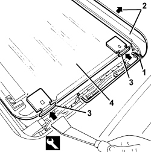

7030B28 SLIDING ROOF BLIND - R+R
- Path
- Procedures > 70 FITTINGS > 7030 SUN ROOF/GLASS PANEL > 7030B SLIDING ROOF > 7030B28 SLIDING ROOF BLIND - R+R
- Kind
- repair procedure (removal / refitting; the operation number is the code)
- Applies to
- all engines; all production periods
- Interactive page
- https://sloeber94.github.io/elrnDB/#/939004828
Applies to: all engines; all production periods
 Removing
Removing
 Refitting
RefittingOp. 7030B18 SLIDING ROOF GLASS PANEL - R+R
1. Disconnect the rods on both sides.
2. Move the drainage channel backwards.
3. Using the special tool, gently press the blind pads inwards and release them from the guide.
Tool | Description | Function | Validity |
|---|---|---|---|
1823014000 | Knife | Retainer removal |
4. Extract the blind releasing the pads on the opposite side.

Applies to: all engines; all production periods
Refitting
Removing- Check that the blind is not damaged.
- Place the blind pads on one side in position then, using the special tool, press the pads on the other side gently inwards and fit them in position.
Tool | Description | Function | Validity |
|---|---|---|---|
1823014000 | Knife | Retainer removal |
- Move the drainage channel forwards and connect the rods.
Op. 7030B18 SLIDING ROOF GLASS PANEL - R+R
- Check that the blind and the sun roof are working properly.